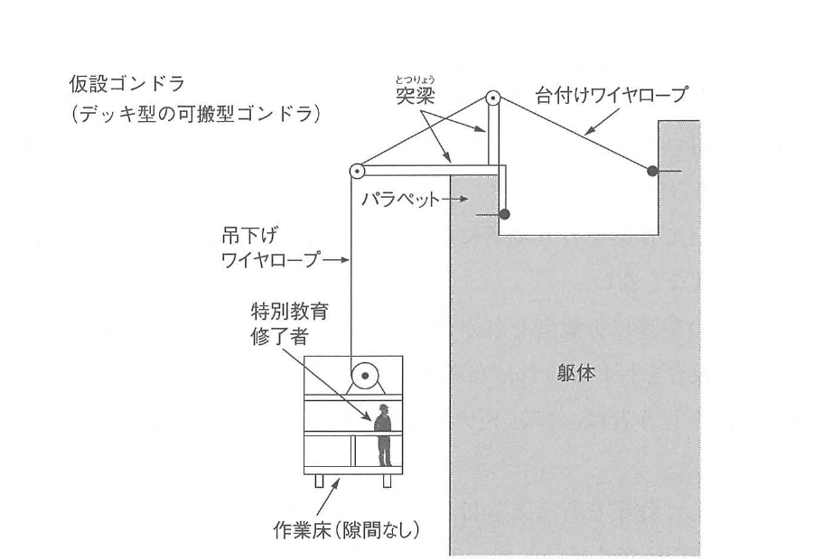
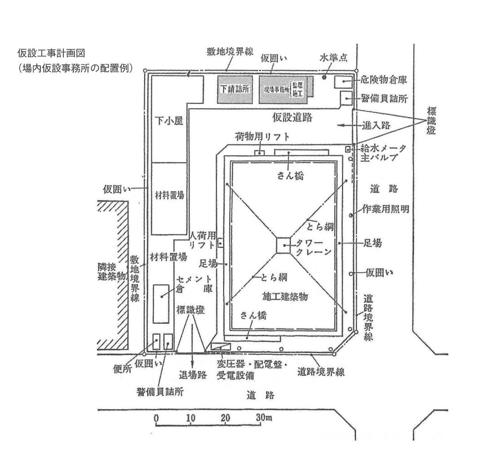
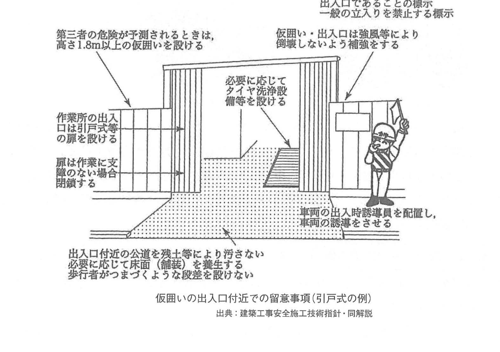
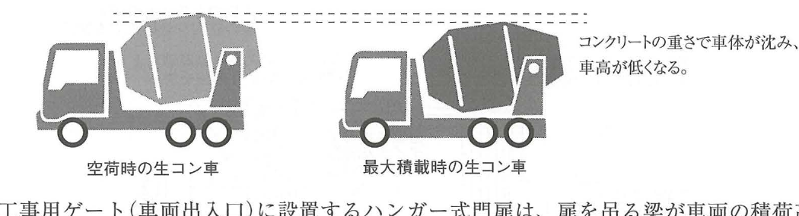

原文
次の1.から3.の建築工事における仮設物の設置を計画するに当たり、留意及び検討すべき事項を、それぞれ2つ具体的に記述しなさい。
ただし、解答はそれぞれ異なる内容の記述とし、申請手続、届出及び運用管理に関する記述は除くものとする。また、使用資機材に不良品はないものとする。
- 仮設ゴンドラ
- 場内仮設事務所
- 工事用ゲート（車両出入口）
次の1.から3.の建築工事における仮設物の設置を計画するに当たり、留意及び検討すべき事項を、それぞれ2つ具体的に記述しなさい。
ただし、解答はそれぞれ異なる内容の記述とし、申請手続、届出及び運用管理に関する記述は除くものとする。また、使用資機材に不良品はないものとする。
Khi lập kế hoạch bố trí công trình tạm trong công trình xây dựng từ mục 1 đến 3 dưới đây, hãy trình bày cụ thể 2 nội dung cần lưu ý hoặc cần xem xét đối với từng loại.
Các câu trả lời phải có nội dung khác nhau. Không viết về thủ tục xin phép, thủ tục thông báo và quản lý vận hành. Ngoài ra, giả định vật tư và thiết bị sử dụng không có khuyết tật.
出典：可搬型ゴンドラの設置の安全基準に関する技術上の指針
出典：建築工事安全施工技術指針・同解説
出典：建築工事安全施工技術指針・同解説
Nguồn ghi trong sách: Hướng dẫn kỹ thuật về tiêu chuẩn an toàn khi lắp đặt gondola di động.
Nguồn ghi trong sách: Hướng dẫn kỹ thuật thi công an toàn công trình xây dựng và phần thuyết minh.
Nguồn ghi trong sách: Hướng dẫn kỹ thuật thi công an toàn công trình xây dựng và phần thuyết minh.
ゴンドラとは、吊り足場・昇降装置・その他の装置・これらに附属する物により構成され、その吊り足場の作業床が、専用の昇降装置により上昇または下降する設備をいう。
ゴンドラは、その使用方法に応じて、常設型ゴンドラと可搬型ゴンドラに分類されている。
常設型ゴンドラは、高層ビルなどに常置されているゴンドラであり、日常的な保守点検に使用されるものである。可搬型ゴンドラは、持ち運びができるゴンドラであり、建築工事の仮設設備として使用されるものである。仮設ゴンドラとは、この可搬型ゴンドラのことである。
仮設ゴンドラとして使用する可搬型ゴンドラの定義や安全基準は、「可搬型ゴンドラの設置の安全基準に関する技術上の指針」に定められている。この指針は、可搬型ゴンドラの使用時等における落下等による災害を防止するため、可搬型ゴンドラの設置に関する留意事項について定めたものである。
Gondola là thiết bị được cấu thành từ giàn giáo treo, thiết bị nâng hạ, các thiết bị khác và các bộ phận phụ thuộc đi kèm; sàn công tác của giàn giáo treo được nâng lên hoặc hạ xuống bằng thiết bị nâng hạ chuyên dụng.
Theo phương thức sử dụng, gondola được phân thành gondola lắp cố định và gondola di động.
Gondola lắp cố định được lắp thường xuyên trên các tòa nhà cao tầng và sử dụng cho công tác bảo trì, kiểm tra thường ngày. Gondola di động có thể vận chuyển và được sử dụng như thiết bị tạm phục vụ công tác xây dựng. Gondola tạm trong nội dung này chính là gondola di động.
Định nghĩa và tiêu chuẩn an toàn của gondola di động dùng làm gondola tạm được quy định trong “Hướng dẫn kỹ thuật về tiêu chuẩn an toàn khi lắp đặt gondola di động”. Hướng dẫn này quy định các nội dung cần lưu ý khi lắp đặt nhằm phòng ngừa tai nạn như rơi, ngã trong quá trình sử dụng gondola di động.
「可搬型ゴンドラの設置の安全基準に関する技術上の指針」では、可搬型ゴンドラとその各部の名称について、次のような定義がされている。
“Hướng dẫn kỹ thuật về tiêu chuẩn an toàn khi lắp đặt gondola di động” định nghĩa gondola di động và tên gọi các bộ phận như sau.

「可搬型ゴンドラの設置の安全基準に関する技術上の指針」では、可搬型ゴンドラの設置にあたり、事業者は次のような事項等について留意しなければならないと定められている。
Theo “Hướng dẫn kỹ thuật về tiêu chuẩn an toàn khi lắp đặt gondola di động”, khi lắp gondola di động, đơn vị sử dụng lao động phải lưu ý các nội dung sau.
仮設ゴンドラを用いた作業の安全確保については、「ゴンドラ安全規則」において、次のようなことが定められている。
Để bảo đảm an toàn khi làm việc bằng gondola tạm, Quy tắc an toàn Gondola quy định các nội dung sau.
場内仮設事務所（工事現場の敷地内に設ける仮設事務所）は、工事の完了後に撤去する仮設物であるが、工事を円滑に進捗するためには、次のような点に留意して設置する必要がある。
場内仮設事務所には、施工者用事務所と監理者用事務所がある。
Văn phòng tạm trong công trường, tức văn phòng tạm được bố trí trong phạm vi công trường, là công trình tạm sẽ được tháo dỡ sau khi công trình hoàn thành. Tuy nhiên, để thi công được triển khai thuận lợi, khi bố trí văn phòng tạm cần lưu ý các nội dung dưới đây.
Văn phòng tạm trong công trường gồm văn phòng dành cho đơn vị thi công và văn phòng dành cho đơn vị giám sát thiết kế.
場内仮設事務所の配置計画（工事現場のどこに仮設事務所を設けるか）を検討するときは、次のような事項に留意しなければならない。
Khi xem xét kế hoạch bố trí văn phòng tạm, tức xác định vị trí đặt văn phòng trong công trường, phải lưu ý các nội dung sau.
主な表示：敷地境界線、仮囲い、現場事務所、監理者用事務所、警備員詰所、進入路、仮設道路、材料置場、危険物倉庫、給水メーター・主バルブ、変圧器・配電盤・受電設備、作業用照明、足場、タワークレーン。
Các nhãn chính: ranh giới khu đất, hàng rào tạm, văn phòng hiện trường, văn phòng giám sát thiết kế, chòi bảo vệ, lối vào, đường tạm, bãi vật liệu, kho vật liệu nguy hiểm, đồng hồ và van chính cấp nước, máy biến áp - tủ phân phối - thiết bị nhận điện, chiếu sáng thi công, giàn giáo và cẩu tháp.

場内仮設事務所には、付属設備として、給水設備・照明設備・便所などを設けなければならない。仮設設備の設置についての基準は、次のように定められている。
Văn phòng tạm trong công trường phải có các thiết bị phụ trợ như hệ thống cấp nước, hệ thống chiếu sáng và nhà vệ sinh. Tiêu chuẩn bố trí thiết bị tạm được quy định như sau.
工事用ゲートは、その工事現場における車両の出入口として使用される。工事用車両の通行における円滑性・安全性を確保するため、次のような点に留意して設置する必要がある。
図中の主な表示：第三者の危険が予測されるときは高さ1.8m以上の仮囲いを設ける、出入口であることの標示、一般の立入りを禁止する標示、作業所の出入口は引戸式等の扉を設ける、仮囲い・出入口は強風等により倒壊しないよう補強する、必要に応じてタイヤ洗浄設備等を設ける、車両の出入時に誘導員を配置する、出入口付近の公道を残土等により汚さない、必要に応じて床面（舗装）を養生する、歩行者がつまずくような段差を設けない。
Cổng công trường được sử dụng làm lối ra vào của xe tại công trường. Để bảo đảm xe công trường lưu thông thuận lợi và an toàn, khi bố trí phải lưu ý các nội dung sau.
Các nội dung chính trong hình: khi dự kiến có nguy hiểm cho người thứ ba, hàng rào tạm phải có chiều cao từ 1,8 m trở lên; phải có biển chỉ dẫn đây là lối ra vào và biển cấm người ngoài; cửa sử dụng kiểu trượt hoặc tương đương; hàng rào và cổng được gia cường chống gió; bố trí thiết bị rửa lốp khi cần; bố trí người hướng dẫn xe; không làm bẩn đường công cộng; bảo vệ mặt nền và không tạo chênh cao làm người đi bộ vấp.


| 日本語 | 読み方 | Tiếng Việt | Giải thích | Liên quan |
|---|---|---|---|---|
| 仮設ゴンドラ | かせつゴンドラ | Gondola tạm | Gondola di động được lắp trong một thời gian nhất định để phục vụ thi công. | 可搬型ゴンドラ |
| 可搬型ゴンドラ | かはんがたゴンドラ | Gondola di động | Loại gondola có thể vận chuyển, lắp đặt và tháo dỡ để dùng tạm thời. | 常設型ゴンドラ |
| 常設型ゴンドラ | じょうせつがたゴンドラ | Gondola lắp cố định | Loại được lắp thường xuyên trên công trình để bảo trì, kiểm tra. | 可搬型ゴンドラ |
| 吊り足場 | つりあしば | Giàn giáo treo | Sàn công tác được treo từ kết cấu phía trên. | 作業床 |
| 昇降装置 | しょうこうそうち | Thiết bị nâng hạ | Cơ cấu làm sàn gondola đi lên hoặc xuống. | ゴンドラ |
| 躯体部分等 | くたいぶぶんとう | Bộ phận kết cấu công trình và phần liên quan | Phần kết cấu và phụ kiện được dùng làm điểm đỡ hoặc neo gondola. | パラペット、ひさし、丸環 |
| 吊下げワイヤロープ | つりさげワイヤロープ | Cáp treo | Cáp trực tiếp treo sàn công tác của gondola. | 作業床 |
| 台付けワイヤロープ | だいつけワイヤロープ | Cáp neo | Cáp cố định một đầu cáp treo vào kết cấu công trình. | 躯体部分等 |
| アーム台 | アームだい | Bệ tay đỡ | Bệ có tay đỡ dùng để mắc cáp treo. | カウンタウェイト |
| 上部支持金具 | じょうぶしじかなぐ | Phụ kiện đỡ phía trên | Phụ kiện dạng móc cố định đầu cáp tại parapet hoặc mái đua. | 補助ロープ |
| 跨座式突梁 | こざしきとつりょう | Dầm console kiểu cưỡi | Dầm nhô vắt cáp, giữ khoảng cách giữa gondola và tường. | 吊心間隔 |
| 補助ロープ | ほじょロープ | Dây phụ an toàn | Dây buộc vào công trình để ngăn phụ kiện đỡ hoặc dầm nhô bị rơi. | 上部支持金具 |
| 吊心間隔 | つりしんかんかく | Khoảng cách tâm treo | Khoảng cách giữa các điểm treo của gondola. | 取付け間隔 |
| シャックル | シャックル | Shackle, ma ní | Phụ kiện liên kết tháo lắp dùng để nối cáp. | ワイヤロープ |
| カウンタウェイト | カウンタウェイト | Đối trọng | Khối lượng cân bằng cho bệ tay đỡ. | アーム台 |
| 充電電路 | じゅうでんでんろ | Mạch điện đang mang điện | Đường dẫn điện đang có điện áp và có nguy cơ gây điện giật. | 感電防止 |
| 特別教育 | とくべつきょういく | Đào tạo đặc biệt | Đào tạo an toàn bắt buộc trước khi giao một số công việc nguy hiểm. | ゴンドラ操作 |
| 要求性能墜落制止用器具 | ようきゅうせいのうついらくせいしようきぐ | Dụng cụ ngăn ngã đáp ứng yêu cầu tính năng | Thiết bị bảo vệ cá nhân dùng để ngăn rơi ngã. | 安全帯 |
| 巻過防止装置 | まきすぎぼうしそうち | Thiết bị chống cuốn quá hành trình | Ngăn cơ cấu nâng cuốn vượt giới hạn an toàn. | 昇降装置 |
| 歯止め | はどめ | Cơ cấu chặn/hãm | Cơ cấu ngăn thiết bị nâng trôi hoặc chuyển động ngoài ý muốn. | 昇降装置 |
| 場内仮設事務所 | じょうないかせつじむしょ | Văn phòng tạm trong công trường | Văn phòng đặt trong phạm vi công trường và tháo dỡ khi công trình hoàn thành. | 施工者用・監理者用 |
| 施工者用事務所 | せこうしゃようじむしょ | Văn phòng đơn vị thi công | Nơi nhà thầu nghỉ, họp và điều hành thi công. | 監理者用事務所 |
| 監理者用事務所 | かんりしゃようじむしょ | Văn phòng đơn vị giám sát thiết kế | Nơi kiến trúc sư đối chiếu thi công với hồ sơ thiết kế. | 施工者用事務所 |
| 盛替え | もりかえ | Chuyển bố trí công trình tạm | Di chuyển hoặc bố trí lại công trình tạm theo tiến độ thi công. | 外構工事 |
| 出先連絡所 | でさきれんらくしょ | Điểm liên lạc tại chỗ | Điểm liên lạc bố trí trong công trường khi văn phòng chính đặt bên ngoài. | 場内仮設事務所 |
| 工事用ゲート | こうじようゲート | Cổng công trường | Lối ra vào dành cho xe công trường. | 車両出入口 |
| 引戸式 | ひきどしき | Kiểu cửa trượt | Cánh cửa di chuyển theo phương ngang, không chiếm không gian mở ra đường. | 門扉 |
| ハンガー式門扉 | ハンガーしきもんぴ | Cửa cổng kiểu treo | Cánh cổng được treo vào dầm phía trên; dầm này quyết định chiều cao thông thủy. | 有効高さ |
| 有効高さ | ゆうこうたかさ | Chiều cao thông thủy | Khoảng cao thực tế mà xe hoặc vật tư có thể đi qua. | 梁下端 |
| 道路占用 | どうろせんよう | Chiếm dụng đường | Sử dụng một phần không gian đường công cộng cho mục đích thi công. | 道路幅員 |
| カーブミラー | カーブミラー | Gương cầu giao thông | Gương hỗ trợ quan sát điểm mù tại cổng. | 公衆災害 |
| 控え | ひかえ | Thanh chống | Cấu kiện gia cường để cổng hoặc hàng rào không bị đổ. | 強風 |
| 守衛所 | しゅえいしょ | Chòi bảo vệ | Vị trí thường trực của bảo vệ tại cổng chính. | 警備員 |
| 標示灯 | ひょうじとう | Đèn báo | Đèn thông báo xe công trường đang ra hoặc vào. | ブザー |
Sàn công tác được treo bằng cáp treo. Cáp truyền lực lên phụ kiện đỡ phía trên hoặc dầm console, rồi vào parapet hoặc kết cấu công trình. Cáp neo và dây phụ tạo đường liên kết an toàn để ngăn bộ phận đỡ bị tuột hoặc rơi.
Văn phòng thi công phục vụ điều hành và tổ chức sản xuất; văn phòng giám sát thiết kế phục vụ kiểm tra sự phù hợp giữa thi công và hồ sơ thiết kế. Tách riêng giúp duy trì chức năng, trách nhiệm và tuyến kiểm tra độc lập.
Khi thùng chứa đầy bê tông, hệ thống treo và lốp chịu tải lớn hơn nên thân xe hạ xuống. Khi không tải, thân xe trở lại vị trí cao hơn. Vì vậy trạng thái không tải là điều kiện bất lợi khi kiểm tra chiều cao cổng.
Chiều cao thông thủy không phải chiều cao hình học tổng thể của cổng, mà là khoảng không thực tế từ mặt nền đến cấu kiện thấp nhất phía trên, thường là mép dưới dầm treo cửa.
| Đối tượng | Quy định trong sách |
|---|---|
| Nước dùng cho văn phòng tạm | 40-50 L/người·ngày |
| Chiếu sáng: thô / thường / chính xác | 70 / 150 / 300 lx |
| Nhà vệ sinh: nữ / nam đại tiện / nam tiểu tiện | 20 / 60 / 30 người cho mỗi thiết bị |
| Hàng rào tạm khi có nguy hiểm cho người thứ ba | cao từ 1,8 m trở lên |
| Chủ thể / điều kiện | Điểm phải nhớ |
|---|---|
| 上部支持金具・跨座式突梁の取付け間隔 | 可搬型ゴンドラの吊心間隔に等しくする |
| 吊下げワイヤロープが一本のゴンドラ | 墜落制止用器具はゴンドラ以外に取り付ける |
| ゴンドラの日常点検 | その日の作業開始前に実施 |
| 工事用ゲートの幅 | 前面道路幅員 + 車両回転半径 |
| RC現場のゲート有効高さ | 空荷時の生コン車で決める |
| ハンガー式門扉 | 最大資機材が通過できる高さ + 上部網で重量・風圧低減 |
| 複数ゲート | 守衛所はメインのみ、その他は警備員 |
Dễ quan sát ra vào + ít phải chuyển bố trí + dễ đấu nối cấp thoát nước và điện.
| {{HEADER_1}} | {{HEADER_2}} |
|---|---|
| {{ROW_KEY}} | {{ROW_RELATION}} |
{{NOTE_CONTENT}}
{{WARNING_CONTENT}}
{{MEMORY_ITEM}}